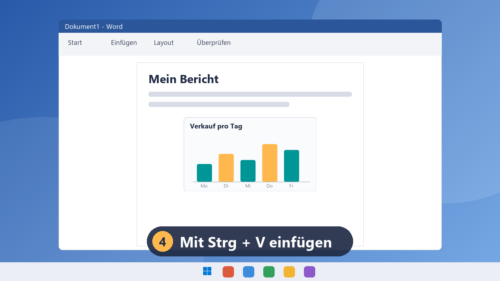

Screenshot erstellen
So fotografierst du einen Ausschnitt deines Bildschirms und fügst ihn in dein Dokument ein.
Video
36 Sekunden, ohne Ton. Die Schritte stehen auch unten.
Schritt für Schritt
-
Drücke Win + Shift + S
Halte alle drei Tasten gleichzeitig gedrückt. Der Bildschirm wird dunkel.

-
Ziehe einen Rahmen um den Bereich
Halte die linke Maustaste gedrückt und ziehe ein Rechteck um das, was du speichern willst. Lass dann los.

-
Der Screenshot ist jetzt kopiert
Unten rechts erscheint eine Meldung. Dein Bild liegt jetzt in der Zwischenablage.

-
Füge ihn mit Strg + V ein
Klicke in dein Word-Dokument an die Stelle, wo das Bild hin soll, und drücke Strg + V.

Typische Fehler und Tipps
- Nichts passiert? Drücke alle drei Tasten wirklich gleichzeitig und lass sie dann sofort los.
- Bild weg? Der Screenshot liegt nur in der Zwischenablage. Wenn du danach etwas anderes kopierst (Strg + C), ist er überschrieben.
- Dauerhaft speichern: Klicke auf die Meldung unten rechts. Im Fenster, das sich öffnet, speicherst du das Bild mit Strg + S.
- Datenschutz: Achte darauf, dass auf dem Screenshot keine Namen, Passwörter oder Gesichter zu sehen sind.
Mini-Übung
Aufgabe: Mache einen Screenshot von einem Ausschnitt deines Bildschirms und füge ihn in ein leeres Word-Dokument ein. Speichere es als Screenshot_KÜRZEL_v1.docx.
Lösung anzeigen
- Win + Shift + S drücken und Rahmen ziehen.
- Word öffnen, ins leere Dokument klicken, Strg + V.
- Mit Strg + S unter dem richtigen Namen speichern (Kürzel statt Namen).
Das passt dazu
Als Nächstes: Bildschirm aufnehmen, Datei richtig benennen, Datei in Teams hochladen (kommen bald im Bereich Grundlagen).